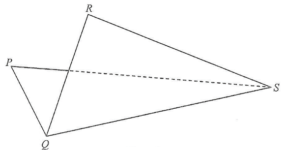

(a) $PQRS$ is a thin quadrilateral metal sheet, where $PQ = 12\text{ cm}$, $PS = 10\text{ cm}$, $QR = 13\text{ cm}$, $\angle QPS = 82^\circ$ and $\angle QRS = 65^\circ$. Find
(i) the length of $QS$,
(ii) $\angle RQS$. (4 marks)
(b) The metal sheet $PQRS$ described in (a) is now folded along $QS$ (see Figure 2). It is given that the angle between the plane $PQS$ and the plane $QRS$ is $80^\circ$.
(i) Find the shortest distance from $R$ to the plane $PQS$.
(ii) Let $X$ be any point lying on the plane $QRS$. Someone claims that the
distance between $P$ and $X$ exceeds $8\text{ cm}$. Is the claim correct?
Explain your answer. (4 marks)

In triangle $PQS$ we know two sides and the included angle $\angle QPS = 82^\circ$.
$$QS^2 = PQ^2 + PS^2 - 2(PQ)(PS)\cos\angle QPS$$ $$QS^2 = 12^2 + 10^2 - 2(12)(10)\cos 82^\circ$$ $$QS^2 = 144 + 100 - 240\cos 82^\circ \approx 210.6019$$ $$QS \approx 14.5120 \text{ cm}$$In triangle $QRS$ we know $QR = 13$, $QS \approx 14.5120$ and $\angle QRS = 65^\circ$.
$$\frac{\sin\angle QSR}{QR} = \frac{\sin\angle QRS}{QS}$$ $$\sin\angle QSR \approx \frac{13\sin 65^\circ}{14.5120} \approx 0.81147$$So $\angle QSR \approx 54.28^\circ$ or $125.72^\circ$ (rejected — angle sum would exceed $180^\circ$).
$$\angle RQS \approx 180^\circ - 65^\circ - 54.28^\circ \approx 60.72^\circ$$Let $T$ be the foot of the perpendicular from $R$ to $QS$ (so $T$ lies on the fold line).
Drop $RT$ in triangle $QRS$:
$$RT = QR \sin\angle RQS = 13\sin 60.7200^\circ \approx 11.337 \text{ cm}$$The angle between the two planes ($PQS$) and ($QRS$) is $80^\circ$,
and the perpendicular from $R$ to $QS$ makes the same angle with the folded plane $PQS$.
Let $h$ be the shortest distance from $R$ to plane $PQS$:
$$h = RT \sin 80^\circ \approx 11.337 \times \sin 80^\circ \approx 11.17 \text{ cm}$$Let $d$ be the shortest distance from $P$ to plane $QRS$ (i.e. the perpendicular height of the tetrahedron $PQRS$ over base $QRS$).
Equate the volume of tetrahedron $PQRS$ computed in two ways:
$$\tfrac{1}{3}\,(\text{area of } \triangle QRS)\,h = \tfrac{1}{3}\,(\text{area of } \triangle PQS)\,d$$ $$\frac{d}{h} = \frac{(\text{area of } \triangle PQS)}{(\text{area of } \triangle QRS)} = \frac{\tfrac{1}{2}(12)(10)\sin 82^\circ}{\tfrac{1}{2}(13)(14.5120)\sin 60.7200^\circ}$$ $$d \approx 11.1689 \times \frac{59.4162}{82.1365} \approx 8.0641 \text{ cm}$$Since $P$ itself lies in the plane $PQS$ but not in $QRS$,
and its perpendicular distance to $QRS$ is $d \approx 8.064 > 8$, every point $X$ on plane $QRS$ satisfies
Question. \(PQRS\) is a thin quadrilateral metal sheet with \(PQ=15\text{ cm}\), \(PS=12\text{ cm}\), \(QR=16\text{ cm}\), \(\angle QPS=75^{\circ}\) and \(\angle QRS=70^{\circ}\).
(a) Find \(QS\) and \(\angle RQS\).
(b) The sheet is folded along \(QS\) so that the angle between the planes \(PQS\) and \(QRS\) is \(70^{\circ}\).
(i) Find the shortest distance from \(R\) to the plane \(PQS\).
(ii) A student claims that the distance between \(P\) and any point \(X\) on the plane \(QRS\) exceeds \(9\text{ cm}\). Is the claim correct? Explain.